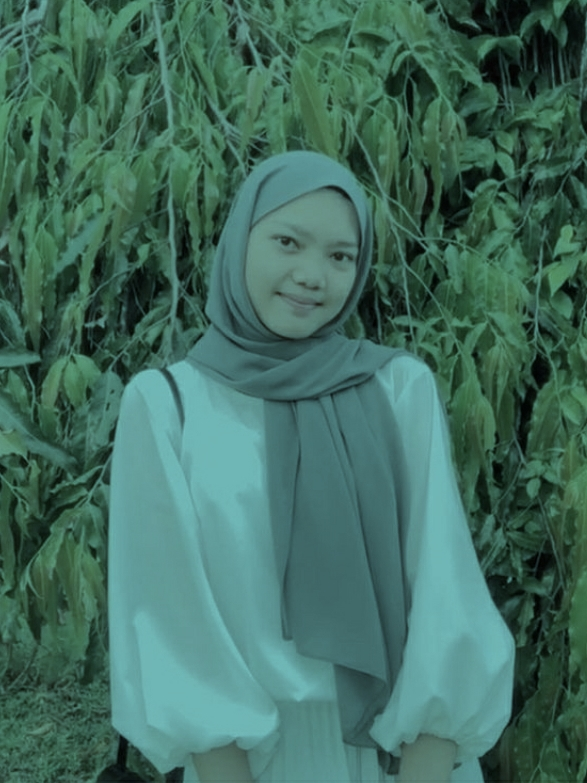

Friends are people who make us feel free and comfortable to tell stories when there is a problem or not. and we don't feel pressured and confined when we are together and it makes us think to 'just hang out with other friends'.
Perhaps the definition that better describes closeness is 'best friend'. But for me it is enough with the word 'Friends'. I don't know anyone, who has the above characteristics. I think you can be friends, which is good of course. because no friend is perfect!
These are some of my friends, the most left is my friend from junior high school, his name is Alliyah Syadza Rukmana, he is now studying at the Muhammadiyah University of Yogyakarta, the middle one is my friend in high school, his name is Moza Sivarabbila, now he is studying at Bengkulu University, and the most right is a friend of mine at the Jakarta polytechnic, her name is Nadya Zahra.